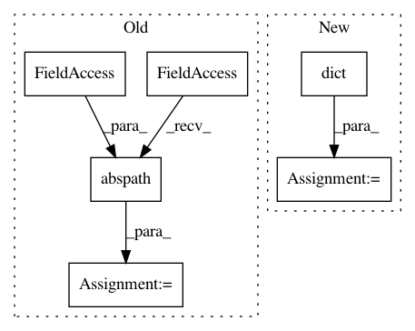

86657ce824ee70a03b43f218de2220bd36fefc4e,qcengine/tests/test_config.py,,opt_state_auto,#,60
Before Change
tmp = copy.deepcopy(dc.config._globals)
base_path = os.path.dirname(os.path.abspath(__file__))
dc.load_options(os.path.join(base_path, "conf_auto.yaml"))
yield
After Change
// Snapshot env
old_globals = copy.deepcopy(dc.config._globals)
old_environ = dict(os.environ)
config = {
"default_compute": {
"psi_path": "/home/user/psi4",
In pattern: SUPERPATTERN
Frequency: 3
Non-data size: 6
Instances
Project Name: MolSSI/QCEngine
Commit Name: 86657ce824ee70a03b43f218de2220bd36fefc4e
Time: 2018-08-14
Author: malorian@me.com
File Name: qcengine/tests/test_config.py
Class Name:
Method Name: opt_state_auto
Project Name: snipsco/snips-nlu
Commit Name: fe26bca9c47ce1e609f7bcdf19fc2715c408e2e8
Time: 2018-06-19
Author: adrien.ball@snips.net
File Name: setup.py
Class Name:
Method Name:
Project Name: MolSSI/QCEngine
Commit Name: fcb2a9e425f2bc873f3f32072b251de63a6e7edc
Time: 2018-08-14
Author: malorian@me.com
File Name: qcengine/tests/test_config.py
Class Name:
Method Name: opt_state_basic